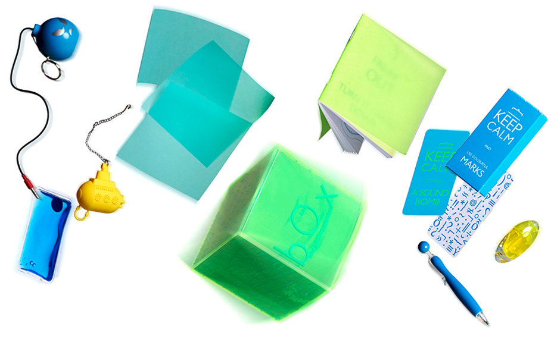
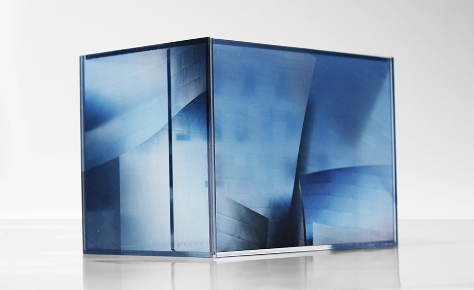
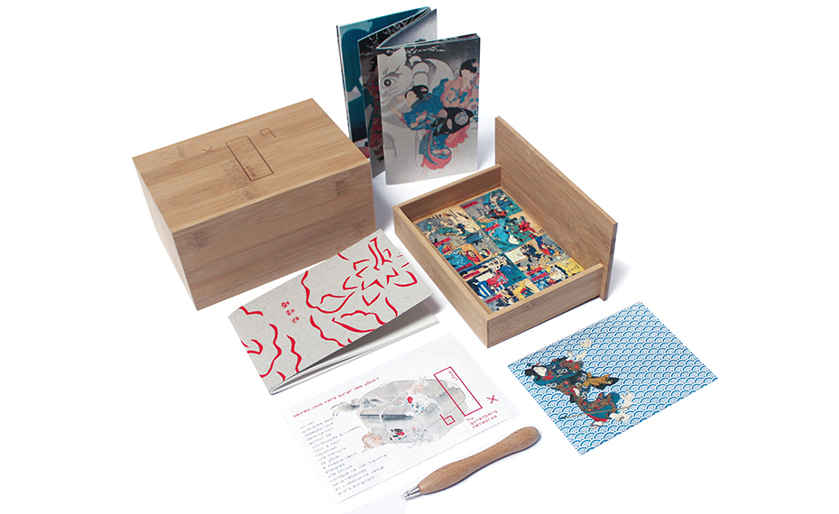
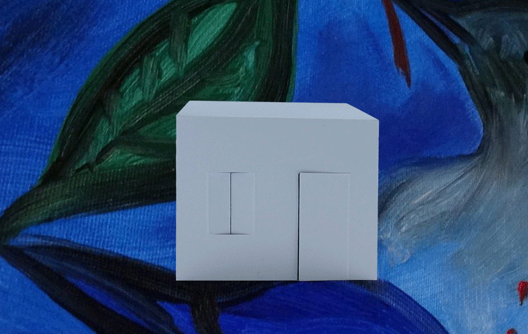

Design de petits objets

Objets Graphiques Non Identifiés ¬ Conception, design, rédaction, photographies
La collection des Box invite à rejouer la chasse au trésor de l’enfance. Boîtes à surprise, elles revisitent, avec humour et hors des sentiers battus, les objets anodins du quotidien aussi bien qu’elles explorent les potentialités ludiques du virtuel.

image bOx
Une bOx sage comme une image qui parle de la photographie « de tous les jours ». Qui croise le regard d’un simple cueilleur d’images. Qui écoute ce que les photographes, chasseurs professionnels, ont à lui apprendre.
Virgule d’exclamation, point d’ironie, point exclarrogatif, point d’exclamation culbuté… des dizaines de signes de ponctuation sont tombés en désuétude sans jamais avoir réussi à s’imposer dans l’usage. Au cours de l’histoire de la langue française, parmi les nombreux signes inventés, seuls douze ont été standardisés et massivement diffusés. Les autres, proposés pour compléter la ponctuation, restent dans l’oubli.
Les XVIIe et XVIIIe siècles, notamment, furent florissants et imaginèrent une ponctuation des plus fantaisistes. Si peu connaissent l’histoire de ces signes refusés, quelques artistes et écrivains se sont toutefois laissé entraîner à des facéties typographiques, inspirées par la poésie de ces respirations non standard : El Lissitzky ponctue Rabelais avec des signes de son invention, Michel Ohl exerce le point d’aisances, Olivier Houdart invente le «point de dépit mêlé de tristesse». Paul Claudel, lui, après Mallarmé, joue de l’art de la pause, avec une espace typographique vierge. Dans le même registre musical, et pour retranscrire intonations, variations de volume et de tempo, Ricardo Güiraldes propose de remplacer les signes de ponctuation par les signes du solfège. Le grammairien Gérard de Vivre avait, d’ailleurs, déjà instauré, au XVIe siècle, un système typographique de « pauses » graduées, et de didascalies. Le plus connu, parmi ces inconnus, reste le point d’ironie, grâce à Agnès b. qui le remet à l’honneur dans son journal éponyme, et au Canard enchaîné qui y a recours occasionnellement. Dessiné par Alcanter de Brahm à la fin du XIXe siècle, il est repris dans Plumons l’oiseau (où Hervé Bazin propose également cinq nouveaux signes de ponctuation : les points d’amour, de conviction, d’autorité, d’acclamation, et de doute).
bOx of Life
Depuis les slogans qui égayent les murs de nos cités jusqu’aux aphorismes littéraires transformés en tee-shirts, en passant par les anaphores de nos hommes politiques érigées en formules magiques, et les générateurs numériques de fortune cookies qui délivrent sur internet la prédiction du jour, la mode des « rules », du pastiche en format court, de la prédiction décalée, instaure du lien social dans une époque pourtant si sujette à séparer les êtres. Parmi ces « injonctions » de sagesse, il en est une « Life isn’t about finding yourself. Life is about creating yourself » qui fut déclinée en poster, en « coffee cup wisdom », en ligne de vêtement*… et graffée maintes fois sur les façades de nos villes. Comme une invite à se « produire » soi-même (« over and over » rajoutera le couturier *Yohji Yamamoto sur ses créations), cette citation semble le juste miroir d’une époque où la théâtralisation de l’existence via les réseaux sociaux, le faire soi-même à l’heure du 2.0, invite sans cesse à une démarche créative. Pourtant, peu se doutent qu’elle fut écrite à l’orée du vingtième siècle par le dramaturge irlandais George Bernard Shaw. Sous l’égide de ce prix nobel de littérature, provocateur et anticonformiste dans une Angleterre encore puritaine, j'entendais avec cette bOx of Life, à mon tour, faire mienne la formule « Life is about creating yourself », en marquant d’une âme quelques objets inanimés comme s’ils étaient les outils symboliques d’une certaine créativité. Toujours fidèle, d’autre part, à la pensée latérale du « Thinking outside the box », ce septième Objet Graphique Non Identifié ambitionnait encore, rebondissant sur la prophétie de George Bernard Shaw, d’instaurer un dialogue aphoristique, décalé et collaboratif. « Frotter son langage contre celui de l’autre, limer sa cervelle contre celle d’autrui », en y mêlant tous les signes d’une époque et d’une culture hybride, et en invitant chacun, au cœur d’un cadavre exquis de papier d’une mise en scène numérique conjointe, et d'un festival de courts métrages, pour réinventer et pour partager l’injonction prométhéenne à se créer soi-même.
bOx in black
Gazouiller certaines injonctions de sagesse, ou de déraison, selon le modèle britannique des rules dont l'humour, souvent absurde et décalé, amène à la cogitation hors des sentiers battus.
On peut facilement sur ces chemins de traverse, si on est tant soit peu malin, faire, par hasard, une découverte inattendue : le « Eurêka » d'Archimède, en quelque sorte, qui porte aujourd'hui le nom barbare de sérendipité et auquel la Box in Black est une invite.
bOx au jardin des Yõkai

Les yõkai sont de petits génies moqueurs qui accompagnent la vie quotidienne au Japon.
Tantôt visibles, tantôt non, pervers ou naïfs, cruels ou bienveillants, espiègles, farceurs, souvent inconvenants, ces diablotins sont des calamités sympathiques. Connus depuis des siècles, illustrés par Kuniyoshi ou Hiroshige, mis en scène aujourd’hui dans jeux vidéo, mangas, films d’animation, ils sont là pour qui sait les voir.
Saurez-vous faire surgir des yõkai ?
Invitez quelques amis, asseyez-vous dans le noir autour de 100 bougies allumées. Tour à tour, racontez une histoire de yõkai. À chaque récit, éteignez une bougie. Lorsque la 100e histoire sera racontée et l’obscurité venue, alors surgiront…
Mais vous pouvez aussi vous contenter d’ouvrir la bOx au jardin des yõkai!
bOx in Wonderland
Dans une démarche de réalité augmentée inversée, la bOx in Wonderland ambitionne d’« augmenter », deux contes de Lewis Carroll Les Aventures d’Alice au pays des merveilles et De l’autre côté du miroir grâce à des objets, des imprimés, et des animations multimédia. Pas question ici de « photocopier » le récit, de l’illustrer, mais de surenchérir pour faire de la bOx une « sensation continuée » : un rêve augmenté !

Augmenter les aventures d’Alice c’est s’attaquer à un mythe mainstream! En effet 150 ans après leur publication elles nous influencent toujours! Musicalement elles ont séduit la pop culture, et lui ont inspiré bien des créations psychédéliques (I Am The Walrus des Beatles, White Rabbit de Jefferson Airplane…). Le métal a livré une version plus angoissante de conte (avec Marilyn Manson notamment). Le pop-punk (Paramore), le hip-hop (Odezenne), le rap (Oxmo Puccino) se sont encore attelés à transcrire l’univers de Lewis Carroll. Jusqu’à Damon Albarn qui livre aujourd’hui, en comédie musicale, sa version du pays des merveilles. Cinématographiquement chacun a en tête la montre du lapin blanc, la robe bleue d’Alice revus par Walt Disney, ou le Chapelier fou imaginé par Tim Burton, et connaît par cœur la scène de Matrix où Morpheus laisse choisir Néo entre la pilule rouge et la pilule bleue.
Augmenter les aventures d’Alice était aussi pour moi l'occasion de me confronter à cette interrogation phare de notre époque qu’est la surenchère entre réel et virtuel.
Réutilisant les codes de la quête identitaire, la bOx in Wonderland est une course d’orientation à travers l’œuvre de Lewis Carroll où une dizaine d’objets prennent le relais comme autant d’indices pour rester au pays des merveilles et descendre «avec le lapin blanc au fond du gouffre».
another bOx et Paper Toy bOx
« La société hypermoderne se regarde avidement dans le spectacle qu’elle se donne à elle-même, c’est une société sur écrans qui met le monde sur écrans, prend l’écran pour le monde et se prend elle-même pour ce qu’elle a mis sur écran. »
Les réseaux sociaux, miroirs d’un monde où la visibilité semble être devenue l’impératif majeur, symbolisent fort bien cette société de l’exhibition et du voyeurisme centrée sur une théâtralisation de l’existence, et incarnent habilement la généralisation d’une forme contemporaine de panoptique. À l’inverse des temps philosophiques de la caverne, « savoir » dans la société du web se revendique comme avant tout comme « voir ». C’est la revanche de saint Thomas dans le glissement d’un monde dominé par la parole (pensée) à un monde contrôlé par les diktats du visible. Nombre de penseurs s’interrogent d'ailleurs aujourd’hui, à l’aulne des supports contemporains de ce regard – supports démultiplicateurs, instantanés, éphémères – sur l’effacement de la notion « d’autrui » et estiment que « présenter de soi des images », constamment, en quantité innombrable, sous peine de ne plus exister aux yeux de la société, est une quête sisyphéenne. Produire, sans répit, du « visible » au sein d’espaces de dialogues virtuels – dits d’ailleurs « non-adressés » – est, en effet, lu comme un écueil menant in fine à l’aveuglement de l’individu qui, à peu de frais, et inlassablement, se construit un moi virtuel plus conforme à ses désirs que son être réel. Cependant, amplifier les résonances intimes de sa propre vie n’est pas étranger, toutes proportions gardées, à une certaine démarche créative.
Aussi, loin des critiques stériles qui attaquent régulièrement notre hypermodernité et sa vacuité, la Paper Toy bOx et le Gunnies’ Project, invitaient à une telle injonction prométhéenne à se « produire » soi-même, à inventer, et à partager entre internautes, un « voyage inaccompli ».
En plus d'un coffret « physique » habité par 3 Paper Toys, et nombre d'accessoires imprimés liés au thème du voyage, l'originalité de la démarche a été d'offrir (bien avant la commercialisation du papier dit connecté) l'accès, grâce au support papier, à une certaine « reconnaissance » sur le web. Une réhabilitation de notre vieux papier, à l’heure du « tout réseaux numériques » où les Papers Toys, versions contemporaines des pliages d’antan et des origamis japonais, connaissent un engouement étonnant, frisant le phénomène de mode, notamment auprès d’une population jeune, créative, et dans les milieux du graphisme. Les réseaux sociaux servent ce phénomène. Ses adeptes se servent de Facebook et consors pour présenter leurs créations, créent des sites d’échanges de formes de découpe, des forums de discussion…
Dans le Gunnies’ Project, versant virtuel, chaque internaute était invité à imaginer, puis à faire vivre son propre Paper Toy au sein des réseaux sociaux en échangeant avec les autres avatars de papier de la communauté. Sur le site dédié chacun pouvait, entre autres, participer également à des actions collaboratives, rejoindre l'espace d'expérimentation artistique, ou animer en réalité augmentée l'une des créatures de papier issues de la Paper Toy bOx (versant « physique » du projet).
Étrange manie qu’avait le maître de l’intranquillité de créer, en secret, des hétéronymes (4 accéderont à la célébrité : Ricardo Reis, Alberto Caeiro, Bernardo Soares et Alvaro de Campos). Présents quelquefois simultanément, et sous des styles différents, dans des revues de poésie (sans qu’on ne devine jamais, du vivant de Pessoa, le subtil montage de ses nombreux doubles littéraires) se critiquant mutuellement, discutant ensemble de problèmes poétiques. Quand Pessoa fit mourir le plus âgé de ses avatars, Alberto Caeiro, ce fut alors Alvaro de Campos qui fit son éloge funèbre au cours duquel il regretta ouvertement que Fernando Pessoa fût absent lors de l’enterrement de leur maître ! « Nous avons tous deux vies, la vraie, celle que nous rêvons dans notre enfance et que nous continuons à rêver, adulte, sur fond de brouillard, la fausse qui est celle que nous vivons dans nos rapports aux autres ». L’auteur au patronyme déjà singulier nous dévoilait une voie de navigation, celle de tous les rêves du monde, en compagnie, ici, d’avatars 320 grammes auxquels les internautes, pouvaient justement faire vivre toutes ces chimères. « Je fus, moi, créateur de tout… tout sentir de toutes les manières, tout vivre de toute part ».
Autres propositions de coffret pour la yõkai
 Retour au sommaire général
Retour au sommaire général